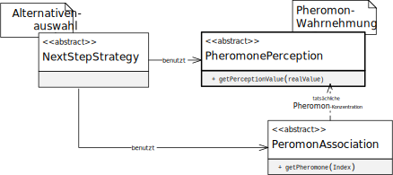

类 PerceptionSimple
java.lang.Object
eu.andredick.aco.pheromoneperception.AbstractPheromonePerception
eu.andredick.aco.pheromoneperception.PerceptionSimple
对信息素的相同感知 - 信息素感知成分的实现
在这种组分的表达中，感知到的信息素浓度等于实际的信息素浓度。
信息素感知用于蚂蚁的解构造。
在解决方案设计中，解决方案组件的候选解以迭代方式进行。
在选择候选解时，蚂蚁在其决策中不仅包括启发式信息，还包括与候选解相关的信息素。
不是直接处理信息素浓度的值，而是使用“主观”的感知值。
因此，信息素感知将实际的信息素浓度转换为感知值，以选择候选解。
在这种组分的表达中，感知到的信息素浓度等于实际的信息素浓度。
信息素感知用于蚂蚁的解构造。
在解决方案设计中，解决方案组件的候选解以迭代方式进行。
在选择候选解时，蚂蚁在其决策中不仅包括启发式信息，还包括与候选解相关的信息素。
不是直接处理信息素浓度的值，而是使用“主观”的感知值。
因此，信息素感知将实际的信息素浓度转换为感知值，以选择候选解。

-
构造器概要
构造器 -
方法概要
-
构造器详细资料
-
PerceptionSimple
public PerceptionSimple()
-
-
方法详细资料
-
getPerceptionValue
提供实际信息素浓度的感知值。
在这里，实现了对信息素与实际浓度的相同感知。
实际信息素浓度 = 感知信息素浓度- 指定者:
getPerceptionValue在类中AbstractPheromonePerception- 参数:
pheromoneConcentration- 信息素的实际浓度- 返回:
- 信息素的实际浓度
-